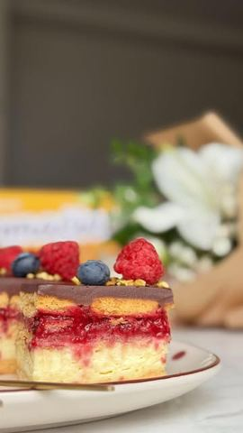

Moja beleška
Sačuvano
Ocena
Sastojci
- Priprema
Priprema
3. Ostaviti da se potpuno ohladi, prekriveno folijom. 4. U ohlađen puding dodati mascarpone ili slatku pavlaku. 5. Za malina sos: kuvati maline, šećer, vodu i limunov sok. Pred kraj dodati razmućen gustin i kuvati dok se ne zgusne. 6. Ganache: slatku pavlaku zagrejati do vrenja, preliti preko sitno izlomljene čokolade, sačekati minut, pa mešati dok se ne dobije glatka smesa. 7. Ređanje: keks – vanila fil – keks – malina sos – keks – ganache. ❄️ Kolač je najbolje ostaviti da se stegne preko noći.
Originalni opis sa Instagrama
Recept savršen za leto, priprema se brzo, a rezultat – pun pogodak! 🍫🍓 Za ovaj kolač koristila sam nove Domaćica mlečne keksiće – nežne, mlečne i blagog ukusa, koji se savršeno uklapaju u lagane deserte. 📏 Mere su za kalup dimenzija 28x18 cm, a potrebno vam je: 🔹 500 g Domaćica mlečnih keksića 🔹 Vanila krem: • 2 pudinga od vanile • 60 g šećera • 500 ml mleka • 250 g mascarpone sira ili 250 ml umućene slatke pavlake 🔹 Malina sos: • 350 g zamrznutih malina • 4 kašike šećera • 30 ml vode • 1 kašika limunovog soka • 3 kašike gustina (razmućenog sa malo vode) 🔹 Ganache: • 250 g mlečne čokolade • 125 ml slatke pavlake 👩🍳 Priprema: 1. Puding i šećer razmutiti u 50 ml mleka. 2. Ostatak mleka (450 ml) staviti da provri, skloniti s vatre, dodati smesu sa pudingom, vratiti na ringlu i mešati dok se ne zgusne. 3. Ostaviti da se potpuno ohladi, prekriveno folijom. 4. U ohlađen puding dodati mascarpone ili slatku pavlaku. 5. Za malina sos: kuvati maline, šećer, vodu i limunov sok. Pred kraj dodati razmućen gustin i kuvati dok se ne zgusne. 6. Ganache: slatku pavlaku zagrejati do vrenja, preliti preko sitno izlomljene čokolade, sačekati minut, pa mešati dok se ne dobije glatka smesa. 7. Ređanje: keks – vanila fil – keks – malina sos – keks – ganache. ❄️ Kolač je najbolje ostaviti da se stegne preko noći. Izdašan, kremast i osvežavajuć – pravi letnji kolač za celu porodicu! Javite mi utiske kada isprobate kolačić, ali i nove @mojadomacica mlečne keksiće 😍 • • • #kolac #malinakolac #letnjaposlastica #brzoilako